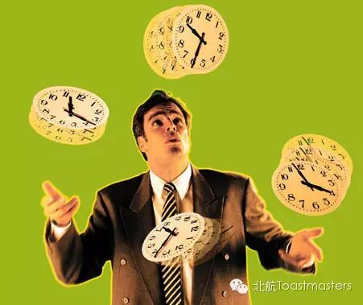
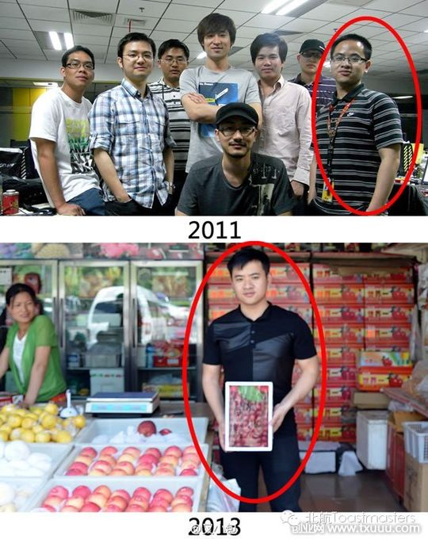
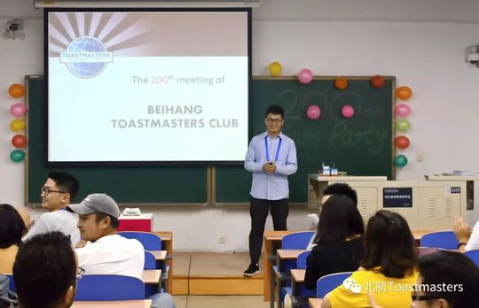
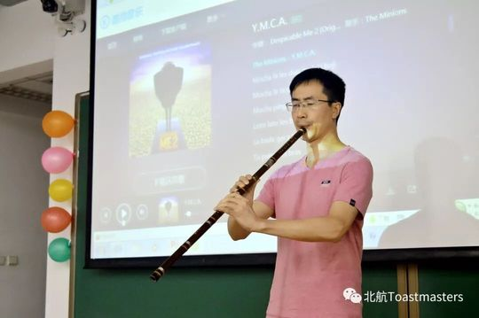
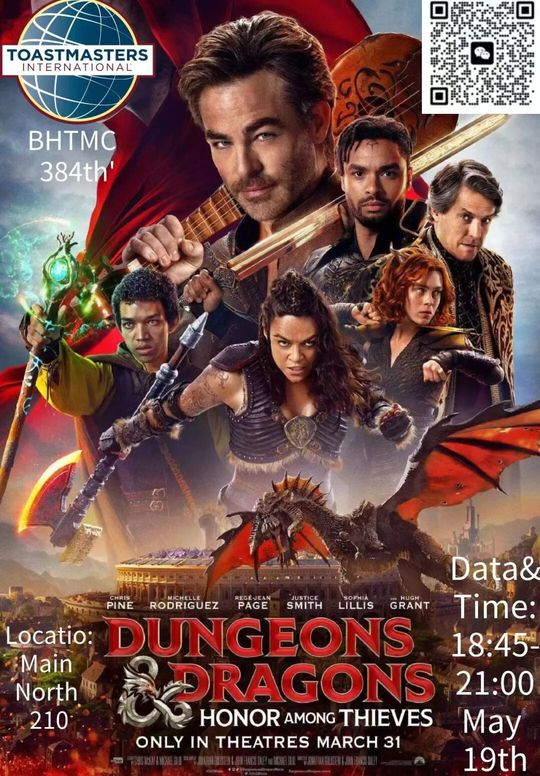

Jason
来自外院的"学霸"型选手，话不多却言出有物，用行动证明"行胜于言"的北航头马人。
会员活跃 2014–2023出现 16 次 · 16 篇2 场演讲
Jason 是北航头马俱乐部 2014 届的核心会员之一。他来自外国语学院，被会友们公认为"学霸"——这份认真与笃定，也贯穿了他在头马舞台上的每一次亮相。2014 年初的春季学期，从第 50 次会议起，他频繁出现在各类角色之中：时而是稳健的会议主持（Toastmaster），时而是言辞犀利的总点评官（General Evaluator），时而又化身风趣的即兴主持（Table Topic Master），把"talented and handsome Jason"这样的调侃写进了一篇又一篇会议预告。
在备稿演讲上，他最具代表性的作品是 CC4《Action Speaks Louder Than Words》——一篇关于"少说多做、用行动发声"的演讲。会友们形容他是"thoughtful and humorous"的演讲者，总能带来启发。彼时的他正忙于求职、从校园走向职场，于是这篇演讲也成了他自身蜕变的注脚：行动，才是最响亮的语言。作为俱乐部的 SAA（事务官），他承担了大量幕后服务工作；在 2014 年 4 月的会员成长榜上，他以 TTM、Ah-Counter、GE、备稿点评、语法官等五种角色并列俱乐部担任角色最多的会员之一。
2014 年 6 月，随着从北航毕业，Jason 在第 64 次会议的欢送会上与 Amanda、Jocelyn、Shawn 一同告别——俱乐部为这群贡献良多的毕业生准备了特别的回顾与致谢环节。他在头马的时间不算漫长，却把"行胜于言"这件事，从演讲台一直做到了俱乐部的服务岗位上。
里程碑
- 2014-03 活跃于俱乐部核心角色 ↗从第50次会议起密集承担主持、点评、即兴主持等多种角色。
- 2014-04 完成CC4备稿演讲 ↗第55、56次会议先后呈现《Action Speaks Louder Than Words》。
- 2014-04-08 登上会员成长榜前列 ↗以TTM/Ah-C/GE/PSE/Gram.五项角色，与Peter、Deron并列担任角色最多。
- 2014-06-20 毕业告别 ↗第64次欢送会上与Amanda、Jocelyn、Shawn一同毕业告别，获俱乐部特别致谢。
闯关之路 · Competent Communication
CC1
破冰
CC2
组织你的演讲
CC3
明确目标
✓
CC4
怎么说
CC5
肢体在说话
CC6
声音的变化
CC7
研究你的主题
CC8
善用视觉辅助
CC9
以理服人
CC10
激励听众
做过的演讲 · 2 场
作为求职中的SAA，结合从学生到职场人的转变，分享为何要付诸行动。
讲述行动的力量，哪怕沉默无声，行动也比空谈更响亮；批评只说不做的现象。
担任过的职务 · 俱乐部官员
事务 SAA2014春 · 2014.01–2014.06
担任过的会议角色
Toastmaster主持×2点评官(General Evaluator)×3即兴主持(TTM)备稿点评官(Evaluator/PSE)语法官(Grammarian)比赛评委组(Judge)
为俱乐部做的事
- 长期担任事务官(SAA)，负责会议事务与现场服务
- 在2014春季学期高频担任主持人、总点评官与即兴主持，支撑多场例会运转
- 以CC4《Action Speaks Louder Than Words》传递'行胜于言'的理念
- 作为外院'学霸'，为俱乐部贡献语言与点评上的专业度
- 在会员成长榜上以多角色并列贡献最多的会员之一
照片墙 · 时间线
共 25 帧，其中 1 帧已用人脸识别确认是本人（带 ✓）。
 ✓
✓











完整足迹 · 16 次出现（点开，每条可跳转原文）
- 2014-03-06第50次 · 担任Monk演讲的点评官
- 2014-03-27第53次 · 担任总点评官
- 2014-04-04第54次 · 担任即兴演讲主持
- 2014-04-08成长统计:共担任5次角色TTM,Ah-C,GE,PSE,Gram.
- 2014-04-10第55次 · 做CC4备稿演讲《Action Speaks Louder than Words》,身份为SAA
- 2014-04-17第56次 · 做CC4备稿演讲《Action Speaks Louder Than Words》
- 2014-04-25第57次 · 担任总点评官
- 2014-05-09第58次 · 担任第58次会议主持人
- 2014-05-16第59次 · 担任第59次会议主持人
- 2014-06-05第62次 · 担任总点评官
- 2014-06-19第64次 · 毕业告别,获颁特别贡献奖
- 2015-11-17第118次 · 即兴演讲，扮演老爹拒绝Chris买东西
- 2018-03-22第191次 · 带领评委组
- 2018-06-13第200次 · 作为兄弟俱乐部主席出席200次盛典
- 2023-05-18第384次 · Beihang TMC 384th Meeting
- 2023-06-01第386次 · 北航头马演讲社第386次中文会议
“Action Speaks Louder Than Words”